Breaking Bad - all seasons and episodes
On this page of the site you can read the text descriptions of all series and frames from them. This additional information may help you in search of a specific episode, but it is a spoiler for those who watching Breaking Bad for the first time. We warned you!!!
Just click on the name of the serie below and you will get its detailed description. And if you are a beginner, then start with the pilot episode in the player on main page.
Рейтинг IMDb - 8.7/10
Премьера сезона - 20/01/2008
Окончание сезона - 09/03/2008
Серий - 7
Качество - BDRip
Breaking Bad season 1

Рейтинг IMDb - 8.8/10
Премьера сезона - 08/03/2009
Окончание сезона - 31/05/2009
Серий - 13
Качество - BDRip
Breaking Bad season 2
Рейтинг IMDb - 8.7/10
Премьера сезона - 21/03/2010
Окончание сезона - 13/06/2010
Серий - 13
Качество - BDRip
Breaking Bad season 3
Рейтинг IMDb - 8.9/10
Премьера сезона - 17/06/2011
Окончание сезона - 09/10/2011
Серий - 13
Качество - BDRip
Breaking Bad season 4
Рейтинг IMDb - 9.3/10
Премьера сезона - 15/07/2012
Окончание сезона - 29/09/2013
Серий - 16
Качество - BDRip
Breaking Bad season 5
Breaking Bad - Season 1 Episode 1
"Pilot", 1st episode of the 1st season, you can watch online for free in good quality BDRip and professional voice acting by "Cube in the Cube", was released on January 20, 2008 on channel AMC and gathered at the screens of 1.41 million viewers. Directed by episode was by Vince Gilligan and written by Vince Gilligan.
What is Breaking Bad season 1 episode 1 about
Fifty-year-old chemistry teacher Walter White, who once served hopes in the field of science, finds out that he has cancer. He has no money for payment for treatment, and relatives have nothing to leave in case of death. Hero calculates all options, understanding how difficult it will be for the wife Skyler and their son, who has cerebral palsy. Then he decides to open the manufacturer methamphetamine to earn extra money. Walter teams up with Jesse Pinkman - his expelled student. Noisy partners enter drug business.
Watch online Breaking Bad - Season 1 Episode 1 for free in good quality you can on the main page of this site.
Breaking Bad - Season 1 Episode 2
"Cat's in the Bag...", 2nd episode of the 1st season, you can watch online for free in good quality BDRip and professional voice acting by "Cube in a Cube", was released on January 27, 2008 on the AMC channel and gathered 1.49 million viewers at the screens. The episode was directed by Adam Bernstein and written by Vince Gilligan.
What is Breaking Bad season 1 episode 2 about
Walter wants to end his partnership with Jesse, but they have one more thing in common: they need to get rid of the corpses of Emilio and Krazy-8. the latter turns out to be alive, which adds to the hassle. While White is in class at school, Pinkman must find a suitable container to dissolve the bodies with acid. Skyler comes to him and asks him not to sell marijuana to her husband, not knowing the true nature of their relationship. The Whites had previously learned they would have a girl.
Watch online Breaking Bad - Season 1 Episode 2 for free in good quality you can on the main page of this site.
Breaking Bad - Season 1 Episode 3
"...And the Bag's in the River", 3d episode of the 1st season, which you can watch online for free in good quality BDRip and professional voice acting "Cube in a Cube", was released on February 10, 2008 on the AMC channel and collected 1.08 million viewers from the screens. The episode was directed by Adam Bernstein and written by Vince Gilligan.
What is Breaking Bad season 1 episode 3 about
Having partially dealt with Emilio's body, the partners did not kill Krazy-8. Since a lot fell on Walter, he should be the one to do it. There is a conflict between the characters, as Jesse smoked meth again. He leaves, leaving his partner to clean up the tracks. Hank, after talking with his wife, is sure that his nephew is taking drugs. He scares the guy, wanting to prevent the prank from developing into something more. Walter has to kill the prisoner, as he has left him no options. It's time to talk to Skyler...
Watch online Breaking Bad - Season 1 Episode 3 for free in good quality you can on the main page of this site.
Breaking Bad - Season 1 Episode 4


"Cancer Man", 4th episode of the 1st season, watch online for free in good quality BDRip and professional voice acting by "Cube in a Cube", was released on February 17, 2008 on the AMC channel and collected from the screens 1.09 million viewers. The episode was directed by Jim McKay and written by Vince Gilligan.
What is Breaking Bad season 1 episode 4 about
All family members are now aware of Walter's illness. Hank tries to find out who is making a new drug. Jesse briefly stays at his parents' house. They are afraid that the eldest son will negatively affect the youngest, so communication is crumpled. A joint visit to the doctor does not give Walter and Skyler the answers they need: the prospect of treatment is there, but there are no guarantees. Jesse finds those who are ready to buy a batch of meth, it remains only to persuade Walter to return to business.
Watch online Breaking Bad - Season 1 Episode 4 for free in good quality you can on the main page of this site.
Breaking Bad - Season 1 Episode 5
 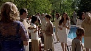
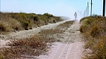
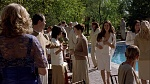
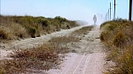

"Gray matter", 5th episode of the 1st season, watch online for free good quality BDRip and professional voice acting "Cube in a Cube", was released on February 24, 2008 on the AMC channel. Episode director became Trisha Brock, the script was written by Patty Lin.
What is Breaking Bad season 1 episode 5 about
Former colleague Elliott and his wife Gretchen offer Walter money for treatment. He refuses. The family council tries to understand the reasons, and White explains: it is better to live less, but without spending and suffering, than to prolong the suffering for yourself and loved ones. At that time Jesse tries to synthesize crystals, but doesn't get the quality he wants. Because of this, the guy is in conflict with a potential accomplice. For the sake of his wife, Walter is ready to be treated, but without financial assistance from outside. He'd rather work with Jesse.
Watch online Breaking Bad - Season 1 Episode 5 for free in good quality you can on the main page of this site.
Breaking Bad - Season 1 Episode 6

«Crazy Handful of Nothing»,5th episode of the 1st season, watch online for free in good quality BDRip and professional voice acting "Cube in a Cube", was released on March 2, 2008 on the AMC channel and collected the screens have 1.07 million viewers. The episode was directed by Bronwen Hughes and written by George Mastras.
What is Breaking Bad season 1 episode 6 about
Walter is in therapy, which causes him to vomit and his hair to fall out. Skyler is sure that Elliott gave the money for the treatment. Jessie can't sell the whole batch, so the partners thought about working with Tuco's dealer. A visit to him for Pinkman turns out to be unsuccessful: the drug is stolen and the guy is beaten. Then Walter gets down to business, seriously determined to get compensation for the goods and the attack on Jesse. Hank, on the other hand, arranges a check at the school: a respirator with a local emblem was found at the crime scene ...
Watch online Breaking Bad - Season 1 Episode 6 for free in good quality you can on the main page of this site.
Вreaking Bad - Season 2 Episode 1


«Seven-Thirty-Seven», 1st episode of the 2nd season, watch online for free which in good quality BDRip and professional voice acting "Cube in the Cube", was released on March 8, 2009 on the AMC channel and collected 1.66 million viewers from the screens. The episode was directed by Bryan Cranston and written by J. Roberts.
What is Breaking Bad season 2 episode 1 about
During the deal, Jesse and Walter become unwitting witnesses to the death of Tuco's henchman. The body is thrown right into the landfill. After a while, Hank begins to look for the methylamine thieves, and finds two bodies among the old cars at once. Heroes it is believed that the newly minted partner also killed the second assistant. They are seriously considering getting rid of Tuco: Jesse is betting on bullets, and Walter is betting on poison. Skyler does not want to communicate with Marie, Hank's persistence in this matter forces him to tell the truth about the reasons.
Watch online Breaking Bad - Season 2 Episode 1 for free in good quality you can on the main page of this site.
Breaking Bad - Season 2 Episode 2
«Grilled», 2nd episode of the 2nd season, watch online for free in good quality BDRip and professional voice acting "Cube in the Cube", was released on March 15, 2009 on the AMC channel and collected from the screens 1.60 million viewers. The episode was directed by Charles Haid and written by George Mastras.
What is Breaking Bad season 2 episode 2 about
After kidnapping Walter and Jesse, Tuco brings them to the desert where his nearly paralyzed uncle lives. The poisoning plan fails, but the couple was able to seize the initiative and get out. The family is looking for White, who has gone missing without explanation. TO In addition, Hank does not stop the investigation regarding the two bodies found. He shows up just in time: Walter and Jesse managed to escape, and Tuco is shot while trying to attack the agent. Only White's documents remained in the house ...
Watch online Breaking Bad - Season 2 Episode 2 for free in good quality you can on the main page of this site.
Breaking Bad - Season 2 Episode 3


«Bit by a Dead Bee», 3d episode of the 2nd season, watch online for free in good quality BDRip and professional voice acting Cube in a cube, was released on February 10, 2008 on the AMC channel and collected from the screens 1.08 million viewers. The episode was directed by Adam Bernstein and written by Vince Gilligan.
What is Breaking Bad season 2 episode 3 about
Having partially dealt with Emilio's body, the partners did not kill Krazy-8. Since the lot fell on Walter, he should be the one to do it. There is a conflict between the characters, as Jesse smoked meth again. He leaves, leaving his partner to clean up the tracks. Hank after a conversation with his wife, he is sure that his nephew is taking drugs. He scares the guy, wanting to prevent the prank from developing into something more. Walter has to kill the prisoner, as he has left him no options. It's time to explain Skyler...
Watch online Breaking Bad - Season 2 Episode 3 for free in good quality you can on the main page of this site.
Breaking Bad - Season 2 Episode 4

«Down», 4th episode of the 2nd season, watch online for free in good quality BDRip and professional voice acting Cube in the Cube, was released on March 29, 2009 on the AMC channel and gathered 1.29 million viewers at the screens. The episode was directed by John Dahl and written by Sam Catlin.
What is Breaking Bad season 2 episode 4 about
Relations between Skyler and Walter remain tense: the wife realizes that her husband is hiding something, and the lie offends her. Jesse is left with nothing in all positions: the money is lost, White does not want to share, his parents kicked him out of the house, his friend did not let him spend the night, and so on. The last hope is to get your van back, but even here it is not without problems. Pinkman would like to synthesize meth again, but without a partner, doing this is almost impossible. There's a chance that Walter will change his mind about tying.
Watch online Breaking Bad - Season 2 Episode 4 for free in good quality you can on the main page of this site.
Breaking Bad - Season 2 Episode 5
«Breakage», 5th episode of the 2nd season, watch online for free in good quality BDRip and professional voice acting Cube in the Cube, was released on April 5, 2009 on the AMC channel and gathered 1.21 million viewers at the screens. The episode was directed by Johan Renck and written by Moira Whalli.
What is Breaking Bad season 2 episode 5 about
Hank is promoted, but something is haunting the agent. He knows that there is no new drug dealer on the streets yet, but there are rumors about a certain Heisenberg. Jesse rents the house and also pays Cousin Badger for the inconvenience caused. Walter's treatment bills are rising, so there's a need to synthesize a new batch of meth. Pinkman's acquaintances should trade to avoid problems with third-party dealers. Skyler and Marie reconcile, but Miss White did not find a common language with her husband.
Watch online Breaking Bad - Season 2 Episode 5 for free in good quality you can on the main page of this site.
Breaking Bad - Season 2 Episode 6
«Peekaboo», 6th episode of the 2nd season, you can watch online for free in good quality BDRip and professional voice acting Cube in the Cube, was released on April 12, 2009 on the AMC channel and gathered 1.41 million viewers at the screens. The episode was directed by Peter Medak and written by G. Roberts and Vince Gilligan.
What is Breaking Bad season 2 episode 6 about
Jesse wants to deal with drug addicts who attacked one of the distributors. In their house, he finds a child, feeds the boy and plays with him. When would-be parents appear, the situation quickly spirals out of control. Walter finds herself in a stalemate: Skyler called Gretchen to thank her for the money and invite her over. White tries to delay the inevitable, but an old friend remembers past grievances and does not agree to lie. I'll have to somehow explain to my wife the origin of the money.
Watch online Breaking Bad - Season 2 Episode 6 for free in good quality you can on the main page of this site.
Breaking Bad - Season 2 Episode 7
«Negro y Azul», 7th episode of the 2nd season, watch online for free in good quality BDRip and professional voice acting Cube in the Cube, was released on April 19, 2009 on the AMC channel. The episode was directed by Felix Alcala and written by John Shiban.
What is Breaking Bad season 2 episode 7 about
Jesse and Walter have different visions for the future. One wants to cover as much territory as possible, the other considers the adventure too dangerous. There is also little frankness between the partners, the tension increases every day. Skyler takes a job at her old job, which could stir up the past. Hank, along with new colleagues, falls into a trap: they were sent a mined head of an informant. Jane finds out that Jesse gave false data about himself, but is indifferent to this.
Watch online Breaking Bad - Season 2 Episode 7 for free in good quality you can on the main page of this site.
Breaking Bad - Season 2 Episode 8
 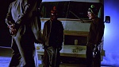
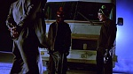
«Better Call Saul», 8th episode of the 2nd season, watch online for free in good quality BDRip and professional voice acting Cube in the Cube, was released on April 26, 2009 on the AMC channel and collected 1.04 million viewers from the screens. The episode was directed by Terry McDonough and written by Peter Gould.
What is Breaking Bad season 2 episode 8 about
The arrest of the Badger red-handed can go sideways to the heroes. It is necessary to prevent the cooperation of the dealer with drug control. Walter and Jesse find a lawyer named Saul Goodman. He does not immediately agree to take on the case, but then not only takes money for current work, but also offers clients long-term cooperation. True, in the interval between these events, he manages to visit the desert at gunpoint. Marie worries about Hank and notices a change in him. A relationship develops between Jane and Jesse.
Watch online Breaking Bad - Season 2 Episode 8 for free in good quality you can on the main page of this site.
Breaking Bad - Season 2 Episode 9


«4 Days Out», 9th episode of the 2nd season, watch online for free which you can in good quality BDRip and professional voice acting Cube in the Cube, was released on May 3, 2009 on the AMC channel. The episode was directed by Michelle McLaren and written by Sam Catlin.
What is Breaking Bad season 2 episode 9 about
There was little money left after the release of Badger. Walter, among other things, is worried about the results of the examination, which will be ready in a few days. White deceives his wife by talking about a trip to his mother. Instead, he, in the company of Jesse, goes to the desert to synthesize meth. In the process, a number of difficulties arise, and the characters repeatedly quarrel. They barely make it back by the deadline. Doctors report a shrinking tumor. Walter takes the news with mixed feelings.
Watch online Breaking Bad - Season 2 Episode 9 for free in good quality you can on the main page of this site.
Breaking Bad - Season 2 Episode 10
«Over», 10th episode of the 2nd season, watch online for free which you can in good quality BDRip and professional voice acting Cube in the Cube, was released on May 10, 2009 on the AMC channel. The episode was directed by Phil Abraham and written by Moira Walley.
What is Breaking Bad season 2 episode 10 about
Remission makes Walter look at some things differently. He tells Jesse that he will be out of business when the current batch is sold out. Pinkman has feelings for Jane, only she does not show reciprocity and wants to limit herself to sex. White is renovating a house and meets a man in the store whose purchases clearly indicate the stranger's desire to cook meth. The hero sees the uninvited guest out of his territory. Skyler is spending more and more time with Ted.
Watch online Breaking Bad - Season 2 Episode 10 for free in good quality you can on the main page of this site.
Breaking Bad - Season 2 Episode 11

«Mandala», 11th episode of the 2nd season, watch online for free in good quality BDRip and professional voice acting Cube in the Cube, was released on May 17, 2009 on the AMC channel. The episode was directed by Adam Bernstein and written by George Mastras.
What is Breaking Bad season 2 episode 11 about
Combo gets killed in the street, Bony Pete wants to get out of business. Only Sol can help the heroes get rid of all the meta at once. He finds a reliable buyer, but the deal almost falls through: a potential partner does not want to get involved with a drug addict, as he saw Jesse stoned. Pinkman not only accepts himself, but also contributes to Jane's breakdown. Skyler finds mistakes in accounting and doesn't want to cover for Ted. She goes into labor just as Walter is dealing with the meth and Jesse.
Watch online Breaking Bad - Season 2 Episode 11 for free in good quality you can on the main page of this site.
Breaking Bad - Season 2 Episode 12

«Phoenix», 12th episode of the 2nd season, watch online for free in good quality BDRip and professional voice acting Cube in the Cube, was released on May 24, 2009 on the AMC channel. The episode was directed by Colin Baxey and written by John Sheeban.
What is Breaking Bad season 2 episode 12 about
Skyler gives birth to a girl named Holly. Walter's deal goes well. While Jane is at a Narcotics Anonymous meeting, Jesse wakes up and thinks the drugs have been stolen. He finds out the truth a little later, but White is in no hurry to give him part of the money: Pinkman will blow them at best, at worst he will be dead in a couple of days from an overdose. Donald exposes his daughter's lies, she blackmails Walter: if he gives the money, the couple will be able to leave. White relents and makes a difficult decision.
Watch online Breaking Bad - Season 2 Episode 12 for free in good quality you can on the main page of this site.
Breaking Bad - Season 2 Episode 13
«ABQ», 13th episode of the 2nd season, watch online for free in good quality BDRip and professional voice acting "Cube in the Cube", was released on May 31, 2009 on the AMC channel and gathered 1.50 million viewers at the screens. The episode was directed by Adam Bernstein and written by Vince Gilligan.
What is Breaking Bad season 2 episode 13 about
Jane's death crippled Jesse. Sol was able to settle the details with the police, but the guy is eaten by guilt, and he ends up in a brothel. The idea of laundering money through Walter Jr.'s donation site works. Jesse is in rehab. Hank doubts that the agents took the real Heisenberg. White is preparing for surgery. The procedure is successful, only Skyler no longer believes her husband: she offers to leave, because she does not want to live with a liar.
Watch online Breaking Bad - Season 2 Episode 13 for free in good quality you can on the main page of this site.
Вreaking Bad - Season 3 Episode 1
«No Más», 1st episode of the 3d season, which you can watch online for free in good quality BDRip and professional voice acting "Cube in the Cube", was released on March 21, 2010 on the AMC channel and gathered 1.95 million viewers at the screens. The episode was directed by Bryan Cranston and written by Vince Gilligan.
What is Breaking Bad season 3 episode 1 about
Skyler files for divorce and promises Walter not to tell anyone about the drugs if he signs the papers. White had already moved out of the house, but before talking with his wife, he considered the separation temporary. Now he wants to start a business, which he personally informs Gus about. Walter picks up Jesse from the clinic. The guy is depressed, although he claims that he has quit. At this time, somewhere on the border with Mexico, two silent twin brothers kill several illegal immigrants and the driver with whom they traveled, and then burn the car.
Watch online Breaking Bad - Season 3 Episode 1 for free in good quality you can on the main page of this site.
Вreaking Bad - Season 3 Episode 2
«Caballo sin Nombre», 2nd episode of the 3d season, which you can watch online for free in good quality BDRip and professional voice acting "Cube in the Cube", was released on April 4, 2010 on the AMC channel and gathered 1.33 million viewers at the screens. The episode was directed by Michelle McLaren and written by George Mastras.
What is Breaking Bad season 3 episode 2 about
Jesse buys a house from his parents through Saul. He's more than doubled the price by mentioning the drug lab. Saul tasks Mike with monitoring White's home and loved ones, while attempting to cheer up a client who has lost heart over a divorce. Skyler's problems at work have not gone away: the boss is tinkering with finances, and this will have consequences. At the nursing home, the twins learn Walter's name and visit his home. An unexpected text message saves an unsuspecting White's life.
Watch online Breaking Bad - Season 3 Episode 2 for free in good quality you can on the main page of this site.
Вreaking Bad - Season 3 Episode 3
 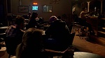
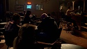
«IFT», 3d episode of the 3d season, which you can watch online for free in good quality BDRip and professional voice acting "Cube in the Cube", was released on March 21, 2010 on the AMC channel and gathered 1.95 million viewers at the screens. The episode was directed by Bryan Cranston and written by Vince Gilligan.
What is Breaking Bad season 3 episode 3 about
The twins turn out to be Tuco's relatives. They and other representatives of the cartel want to avenge the death of a drug lord. Gus gets the news first. Saul pressures Jesse to return to meth production. Walter returns to the family, although Skyler is against it. She tells her lawyer about the drugs and is advised to go to the police. White gives his wife time to think about the money: she can pick it up and spend it on the family. Instead of answering, Skyler tells her husband that she slept with Ted.
Watch online Breaking Bad - Season 3 Episode 3 for free in good quality you can on the main page of this site.
Вreaking Bad - Season 3 Episode 4
 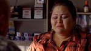
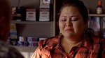

«Green Light», 4th episode of the 3d season, which you can watch online for free in good quality BDRip and professional voice acting "Cube in the Cube", was released on April 11, 2010 on the AMC channel and gathered 1.46 million viewers at the screens. The episode was directed by Scott Winant and written by Sam Catlin.
What is Breaking Bad season 3 episode 4 about
Now Jesse works alone. Walter does not like that the ex-partner used his formula, and the drug turned out to be clearly worse in quality. Gus agrees to buy from Jesse, only pays him half the amount. The second part is sent to White as motivation to return to duty. Skyler and Ted's relationship continues. Hank gets closer to exposing Heisenberg. He even refuses a promotion and a move, as he is sure that he will soon arrest the "ghost".
Watch online Breaking Bad - Season 3 Episode 4 for free in good quality you can on the main page of this site.
Вreaking Bad - Season 3 Episode 5
«Más», 5th episode of the 3d season, which you can watch online for free in good quality BDRip and professional voice acting "Cube in the Cube", was released on April 18, 2010 on the AMC channel and gathered 1.61 million viewers at the screens. The episode was directed by Johan Renck and written by Moira Whalli.
What is Breaking Bad season 3 episode 5 about
Gus diligently selects the keys to White. Among other things, he offers the chemist qualitatively new working conditions - a laboratory arranged according to the highest class. Walter resigned himself: his marriage to Skyler could not be saved. He accepts Gus' proposal, signs the divorce papers, and leaves the house with a bag full of money. Hank had previously figured out that the meth maker was moving around in a van. Investigating all the similar cars and other clues, he finds a photo of Jesse in the apartment of Kombo, who was killed earlier.
Watch online Breaking Bad - Season 3 Episode 5 for free in good quality you can on the main page of this site.
Вreaking Bad - Season 3 Episode 6

«Sunset», 6th episode of the 3d season, which you can watch online for free in good quality BDRip and professional voice acting "Cube in the Cube", was released on April 25, 2010 on the AMC channel and gathered 1.64 million viewers at the screens. The episode was directed by John Shiban and written by John Shiban.
What is Breaking Bad season 3 episode 6 about
Jesse is going to continue to work alone, so we need to restore the old outlets. Walter, as promised by Gus, gets a new laboratory and a very competent partner, also a chemist. White talks to his wife, whom he guarantees all kinds of material support for her and the children. Hank nearly arrests Jesse and Walter locked in the van, but they are rescued by Saul. Gus, meanwhile, also takes the trouble away from White. He meets with the twins and proposes to them Tuco's immediate killer, Hank.
Watch online Breaking Bad - Season 3 Episode 6 for free in good quality you can on the main page of this site.
Вreaking Bad - Season 3 Episode 7


«One Minute», 7th episode of the 3d season, which you can watch online for free in good quality BDRip and professional voice acting "Cube in the Cube", was released on May 2, 2010 on the AMC channel and gathered 1.52 million viewers at the screens. The episode was directed by Michelle McLaren and written by Thomas Schnauz.
What is Breaking Bad season 3 episode 7 about
Hank beats Jesse, as he is sure of his guilt, but could not arrest him. For this, the law enforcement officers are first temporarily, and then finally removed from work. The twins attack Hank in the parking lot. He receives several wounds, while one of the brothers managed to severely cripple the car, and the second - to shoot. Earlier, White had offered Jesse a collaboration. The guy initially refused, but changed his mind. Skyler wants to understand just how deep Walter is in the illegal business.
Watch online Breaking Bad - Season 3 Episode 7 for free in good quality you can on the main page of this site.
Вreaking Bad - Season 3 Episode 8


«I See You», 8th episode of the 3d season, which you can watch online for free in good quality BDRip and professional voice acting "Cube in the Cube", was released on May 9, 2010 on the AMC channel and gathered 1.78 million viewers at the screens. The episode was directed by Colin Baxey and written by Jennifer Hutchinson.
What is Breaking Bad season 3 episode 8 about
Jesse takes the place of Walter's partner. Gus puts a couple of serious tasks. It doesn’t work right away: while Hank is undergoing surgery, White spends time with his family in the hospital. Cartel bosses want to understand why the twins switched to Hank. They have questions for Gus, but he is in no hurry to talk about his role. In addition, he eliminates the surviving brother right in the ward. So the DEA and the cartel are deprived of information at once. Unfortunately for Gus, the problems don't end there...
Watch online Breaking Bad - Season 3 Episode 8 for free in good quality you can on the main page of this site.
Вreaking Bad - Season 3 Episode 9
«Kafkaesque», 9th episode of the 3d season, which you can watch online for free in good quality BDRip and professional voice acting "Cube in the Cube", was released on May 16, 2010 on the AMC channel and gathered 1.61 million viewers at the screens. The episode was directed by Michael Slovis and written by Peter Gould and George Mastras.
What is Breaking Bad season 3 episode 9 about
Jesse believes the distribution of income from the sale of meth is unfair. He begins to invent his own marketing scheme, for which he will have to steal from his own laboratory. Skyler makes up a story about Walter winning at the underground casino to help Marie pay for Hank's treatment. White saw through Gus's plan to eliminate both the twins and Hank. He offers even more favorable conditions for cooperation. Sol advises Jesse to legalize income through the purchase of a business, such as a salon.
Watch online Breaking Bad - Season 3 Episode 9 for free in good quality you can on the main page of this site.
Вreaking Bad - Season 3 Episode 10

«Fly», 10th episode of the 3d season, which you can watch online for free in good quality BDRip and professional voice acting "Cube in the Cube", was released on May 23, 2010 on the AMC channel and gathered 1.20 million viewers at the screens. The episode was directed by Rian Johnson and written by Sam Catlin and Moira Walley.
What is Breaking Bad season 3 episode 10 about
The stress of the past few weeks has taken a toll on Walter. He practically does not sleep, and the fly that has flown into the laboratory does not give rest. Hunting for her almost cost him his health. Jesse joins the process as White is preventing the new batch from being handled for fear of contamination of the samples. Walter had previously noted that shipments were always missing 200 grams of meth. To calm down his partner, Jesse knocks him out with sleeping pills and does the production himself.
Watch online Breaking Bad - Season 3 Episode 10 for free in good quality you can on the main page of this site.
Вreaking Bad - Season 3 Episode 11
«Abiquiu», 11th episode of the 3d season, which you can watch online for free in good quality BDRip and professional voice acting "Cube in the Cube", was released on May 30, 2010 on the AMC channel and gathered 1.32 million viewers at the screens. The episode was directed by Michelle McLaren and written by John Sheeban and Thomas Schnause.
What is Breaking Bad season 3 episode 11 about
Jessie has a new girlfriend. In a frank conversation, she talks about her younger brother. Thomas contacted drug dealers and completed the task to be accepted into the gang - he shot a competitor who was trading on their territory. By unfortunate coincidence, it turned out to be Kombo. Skyler meets with Saul to see how the lawyer plans to legalize Walter's proceeds. She doesn't like the scheme. Skyler is going to take it personally. White learns that his wife never filed for a divorce.
Watch online Breaking Bad - Season 3 Episode 11 for free in good quality you can on the main page of this site.
Вreaking Bad - Season 3 Episode 12

«Half measures», 12th episode of the 3d season, which you can watch online for free in good quality BDRip and professional voice acting "Cube in the Cube", was released on June 6, 2010 on the AMC channel and gathered 1.19 million viewers at the screens. The episode was directed by Adam Bernstein and written by Sam Catlin and Peter Gould.
What is Breaking Bad season 3 episode 12 about
Jesse plans revenge. Gus sees this as a threat to the entire business. Mike shares his concerns. Walter has no intention of getting rid of his partner. Gus seeks a compromise: Jesse and those who ordered Combo's murder make a forced peace. The death of Thomas makes adjustments to the contract. Jesse goes to meet the offenders. White senses trouble and arrives there on time. He saves Pinkman's life by hitting the bandits with cars. One died from the collision, and the second Walter had to finish off with a shot at point-blank range.
Watch online Breaking Bad - Season 3 Episode 12 for free in good quality you can on the main page of this site.
Вreaking Bad - Season 3 Episode 13
«Full Measure», 13th episode of the 3d season, which you can watch online for free in good quality BDRip and professional voice acting "Cube in the Cube", was released on June 13, 2010 on the AMC channel and gathered 1.56 million viewers at the screens. The episode was directed by Vince Gilligan and written by Vince Gilligan.
What is Breaking Bad season 3 episode 13 about
Although Gus would like to punish both Jesse and Walter, he is unable to do so. The first has fled, and the second is too valuable an employee. Gus allows White to return to work in the company of his former partner Gale. He takes on the skills of a mentor, which promises Walter new problems: if there are two chemists familiar with the recipe, then the lives of White and Pinkman will be in danger. Jesse kills Gale in order to eliminate the threat in the bud and prevent Mike from expending Walter.
Watch online Breaking Bad - Season 3 Episode 13 for free in good quality you can on the main page of this site.
Вreaking Bad - Season 4 Episode 1
«Box Cutter», 1st episode of the 4th season, which you can watch online for free in good quality BDRip and professional voice acting "Cube in the Cube", was released on July 17, 2011 on the AMC channel and gathered 2.58 million viewers at the screens. The episode was directed by Adam Bernstein and written by Vince Gilligan.
What is Breaking Bad season 4 episode 1 about
It turns out that Gale was in charge of equipping the laboratory for White. His apartment even has documentation on the subject. Walter and Jesse can only wait for Gus's reaction to the murder of a chemist assistant. As always, he acts guided not by emotions, but by profit and perspective. What is happening around disturbs Saul: his fragile little world is under threat. The lawyer is looking for "bugs" in the office, and also hires a security guard. Although White and Pinkman are back at work, they realize the danger is still there.
Watch online Breaking Bad - Season 4 Episode 1 for free in good quality you can on the main page of this site.
Вreaking Bad - Season 4 Episode 2

«Thirty-Eight Snub», 2nd episode of the 4th season, which you can watch online for free in good quality BDRip and professional voice acting "Cube in the Cube", was released on July 24, 2011 on the AMC channel and gathered 1.97 million viewers at the screens. The episode was directed by Michelle McLaren and written by George Mastras.
What is Breaking Bad season 4 episode 2 about
Jesse throws a spontaneous party, goes on a break, and in the morning feels lousy. Walter feels threatened by Gus. He buys an illegal revolver and is cautious even in conversations with his wife on the phone. White's current plan is to kill Gus. Mike is going to help them meet. Moreover, he beats up Walter in a bar. Skyler made an offer to buy a car wash and was turned down because her husband had insulted the owner in the past. Hank is embittered by the hardships of rehab and takes it out on Marie.
Watch online Breaking Bad - Season 4 Episode 2 for free in good quality you can on the main page of this site.
Вreaking Bad - Season 4 Episode 3

«Open House», 3d episode of the 4th season, which you can watch online for free in good quality BDRip and professional voice acting "Cube in the Cube", was released on July 31, 2011 on the AMC channel and gathered 1.71 million viewers at the screens. The episode was directed by David Slade and written by Sam Catlin.
What is Breaking Bad season 4 episode 3 about
Skyler gives the car wash owner a test to motivate him to sell the business. When he goes to meet, Mrs. White also knocks down the price, wanting to punish the boor. Cameras are being set up in the lab, along with everything else that really annoys Walter. Jesse never recovered from Gale's murder. Strangers stick around in his house, garbage, alcohol and drugs are everywhere. Marie develops kleptomania from stress. One of the victims even reports to the police.
Watch online Breaking Bad - Season 4 Episode 3 for free in good quality you can on the main page of this site.
Вreaking Bad - Season 4 Episode 4


«Bullet Points», 4th episode of the 4th season, which you can watch online for free in good quality BDRip and professional voice acting "Cube in the Cube", was released on August 7, 2011 on the AMC channel and gathered 1.83 million viewers at the screens. The episode was directed by Colin Baxey and written by Moira Walley.
What is Breaking Bad season 4 episode 4 about
Before dinner at Marie and Hank's, the Whites work out the details of the casino win legend. This is necessary to explain the appearance of money in the family. Hank shows the guests not only the mineral collection, but Gale's papers as well. He believes that he was Heisenberg. Everyone noticed Jesse's slide to the bottom. Saul offers Walt help: you can get new identities and hide. The client is not yet ready for such drastic measures. Mike reports to Gus about Jesse, and then takes the guy somewhere.
Watch online Breaking Bad - Season 4 Episode 4 for free in good quality you can on the main page of this site.
Вreaking Bad - Season 4 Episode 5


«Shotgun», 5th episode of the 4th season, which you can watch online for free in good quality BDRip and professional voice acting "Cube in the Cube", was released on August 14, 2011 on the AMC channel and gathered 1.75 million viewers at the screens. The episode was directed by Michelle McLaren and written by Thomas Schnauz.
What is Breaking Bad season 4 episode 5 about
Walter was worried about his partner, but he's fine. Mike hires Jesse to work collecting money from the stash. Gus organizes a staged attack on them to test Pinkman. Walter returns home with his wife's permission. The Whites now officially own the car wash, allowing them to launder the money they make from meth production. The investigation into Gale's death cheered Hank up. In addition, he found a clue - a napkin from a restaurant owned by Gus.
Watch online Breaking Bad - Season 4 Episode 5 for free in good quality you can on the main page of this site.
Вreaking Bad - Season 4 Episode 6

«Cornered», 6th episode of the 4th season, which you can watch online for free in good quality BDRip and professional voice acting "Cube in the Cube", was released on August 21, 2011 on the AMC channel and gathered 1.67 million viewers at the screens. The episode was directed by Michael Slovis and written by Jennifer Hutchinson.
What is Breaking Bad season 4 episode 6 about
Skyler is worried about her husband's behavior and attitude: he is too careless. Walter buys his son a too expensive and conspicuous car, Skyler insists that the car be returned, although he understands that Walt Jr. will blame his mother. Jesse now works with Mike almost all the time. He does not believe in White's suggestion that the attack was staged. Meanwhile, Gus faces stubborn competitors who cause a lot of problems. Mike wants to recruit fighters and hit him in the forehead, while the boss chooses the format of the meeting and conversation.
Watch online Breaking Bad - Season 4 Episode 6 for free in good quality you can on the main page of this site.
Вreaking Bad - Season 4 Episode 7


«Problem Dog», 7th episode of the 4th season, which you can watch online for free in good quality BDRip and professional voice acting "Cube in the Cube", was released on August 28, 2011 on the AMC channel and gathered 1.91 million viewers at the screens. The episode was directed by Peter Gould and written by Peter Gould.
What is Breaking Bad season 4 episode 7 about
Walter earns too much, so it is unlikely that he will be able to legalize income. This worries Skyler. Hank takes Walt Jr. to Gus's restaurant to get the owner's prints. So he confirms his theory about Gale's work with Fring: his "fingers" were found at the murdered chemist's house. Walter didn't give up on the idea of killing Gus. He even consults Saul and Jesse. The latter agrees at the first opportunity to poison the boss with the poison that White has prepared.
Watch online Breaking Bad - Season 4 Episode 7 for free in good quality you can on the main page of this site.
Вreaking Bad - Season 4 Episode 8
 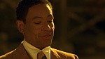
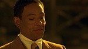
«Hermanos», 8th episode of the 4th season, which you can watch online for free in good quality BDRip and professional voice acting "Cube in the Cube", was released on September 4, 2011 on the AMC channel and gathered 1.98 million viewers at the screens. The episode was directed by Johan Renck and written by Sam Catlin and George Mastras.
What is Breaking Bad season 4 episode 8 about
Gus visits Hector at the nursing home and recounts in detail how the cartel suffered several setbacks. He is avenging the murder of his friend that happened many years ago. The DEA investigation is reaching the finish line. Hank and company even invite Gus in for a chat. Mike is sure that they will not be able to find anything about the past of the boss and about his illegal business now. Hank shares information about the case with Walter. The chemist is nervous and persuades Jesse to poison Gus as soon as possible.
Watch online Breaking Bad - Season 4 Episode 8 for free in good quality you can on the main page of this site.
Вreaking Bad - Season 4 Episode 9

«Bug», 9th episode of the 4th season, which you can watch online for free in good quality BDRip and professional voice acting "Cube in the Cube", was released on September 11, 2011 on the AMC channel and gathered 1.89 million viewers at the screens. The episode was directed by Terry McDonough and written by Moira Walley and Thomas Schnause.
What is Breaking Bad season 4 episode 9 about
A new danger comes from Skyler's old job. The audit of Ted's company has begun, which means that the former accountant may be on the pencil of the tax and other interested services. Listening to conversations and surveillance are not excluded. Gus wisely assessed his chances against the cartel, so he ceded some of his property to them, including the meth formula. New realities are not to Walter's liking. He was also angry with Jesse, because the guy could have stopped all this if he had not backed out of the agreement and poisoned Gus.
Watch online Breaking Bad - Season 4 Episode 9 for free in good quality you can on the main page of this site.
Вreaking Bad - Season 4 Episode 10


«Salud», 10th episode of the 4th season, which you can watch online for free in good quality BDRip and professional voice acting "Cube in the Cube", was released on September 18, 2011 on the AMC channel and gathered 1.80 million viewers at the screens. The episode was directed by Michelle McLaren and written by Peter Gould and Jennifer Hutchinson.
What is Breaking Bad season 4 episode 10 about
The meeting with the cartel will take place in Mexico on their territory. Jesse, accompanied by Gus and Mike, has to make a meth presentation. But Fring has bigger plans. He poisons Eladio and his people. Since Gus also had to drink alcohol with poison, he also feels bad. And in a shootout with security, Mike was injured. At this time, Skyler, with the participation of Sol, wrote out a fictitious inheritance for Ted so that he would pay off the tax and not draw attention to the Whites. Except Ted isn't going to do that.
Watch online Breaking Bad - Season 4 Episode 10 for free in good quality you can on the main page of this site.
Вreaking Bad - Season 4 Episode 11


«Crawl Space», 11th episode of the 4th season, which you can watch online for free in good quality BDRip and professional voice acting "Cube in the Cube", was released on September 25, 2011 on the AMC channel and gathered 1.55 million viewers at the screens. The episode was directed by Scott Winant and written by George Mastras and Sam Catlin.
What is Breaking Bad season 4 episode 11 about
Skyler cannot solve the problem with Ted, and she asks Saul for help. Ted pays the tax, and then almost accidentally dies. Gus informs Walter that he is fired. He also intends to deal with Hank. If White intervenes, his family will suffer. Walter approaches Saul for a "vanisher" business card. Escape will cost the family about 500 thousand. The chemist doesn't know yet: Skyler spent the stash on Ted, and the family has no money. Gus bullies Hector at the nursing home.
Watch online Breaking Bad - Season 4 Episode 11 for free in good quality you can on the main page of this site.
Вreaking Bad - Season 4 Episode 12

«End Times», 12th episode of the 4th season, which you can watch online for free in good quality BDRip and professional voice acting "Cube in the Cube", was released on October 2, 2011 on the AMC channel and gathered 1.73 million viewers at the screens. The episode was directed by Vince Gilligan and written by Thomas Schnause and Moira Walley.
What is Breaking Bad season 4 episode 12 about
Hank, Marie and the White family are now under police surveillance. Walter finds a reason not to go with them: supposedly you can not throw a car wash. The son of his beloved Jesse is hospitalized with poisoning. The guy's suspicion falls on the now former mentor. However, a little personal investigation leads Pinkman to Gus. He and Walter join forces to take down the boss. The first attempt is an improvised explosive device in a car. However, Fring does not sit in it, sensing trouble.
Watch online Breaking Bad - Season 4 Episode 12 for free in good quality you can on the main page of this site.
Вreaking Bad - Season 4 Episode 13
«Face Off», 13th episode of the 4th season, which you can watch online for free in good quality BDRip and professional voice acting "Cube in the Cube", was released on October 9, 2011 on the AMC channel and gathered 1.90 million viewers at the screens. The episode was directed by Vince Gilligan and written by Vince Gilligan.
What is Breaking Bad season 4 episode 13 about
Pinkman is interrogated because of the boy's poisoning. The situation is resolved successfully. The family worries about Walt, who still hasn't figured out how to deal with the boss. Suddenly, an adventurous idea comes to his mind. White offers Hector a deal. He will portray a desire to cooperate with the DEA, lure Gus to him and activate an explosive device. The plan is working. Afterwards, Jesse and Walter destroy the lab.
Watch online Breaking Bad - Season 4 Episode 13 for free in good quality you can on the main page of this site.
Вreaking Bad - Season 5 Episode 1

«Live Free of Die», 1st episode of the 5th season, which you can watch online for free in good quality BDRip and professional voice acting "Cube in the Cube", was released on July 15, 2012 on the AMC channel and gathered 2.93 million viewers at the screens. The episode was directed by Michael Slovis and written by Vince Gilligan.
What is Breaking Bad season 5 episode 1 about
The past does not bring down the heroes. Hank turns his attention to the cameras in the destroyed laboratory. He finds a laptop where all the notes are probably saved. The equipment is placed in the storage of material evidence. Mike, Walter and Jesse team up to destroy the data on a laptop through a wall using strong magnets. They succeeded, but when analyzing the evidence, law enforcement officers found a new clue. Ted is in an unenviable position, while he promises Skyler that he will tell no one, as he fears for the family.
Watch online Breaking Bad - Season 5 Episode 1 for free in good quality you can on the main page of this site.
Вreaking Bad - Season 5 Episode 2


«Madrigal», 2nd episode of the 5th season, which you can watch online for free in good quality BDRip and professional voice acting "Cube in the Cube", was released on July 22, 2012 on the AMC channel and collected 2.29 million viewers from the screens. The episode was directed by Michelle McLaren and written by Vince Gilligan.
What is Breaking Bad season 5 episode 2 about
The investigation into Gus' activities is ongoing. One of those involved has already committed suicide, not wanting to testify and bear responsibility. Lydia Rodart-Quayle suggests that Mike eliminate all those who may potentially cooperate with the DEA. He refuses, but another killer begins to fulfill the order. Mac eliminates him, and then agrees with Lydia to continue selling meth. Walter and Jesse are also in business and are already eyeing a new location for the lab.
Watch online Breaking Bad - Season 5 Episode 2 for free in good quality you can on the main page of this site.
Вreaking Bad - Season 5 Episode 3
«Hazard Pay», 3d episode of the 5th season, which you can watch online for free in good quality BDRip and professional voice acting "Cube in the Cube", was released on July 29, 2012 on the AMC channel and collected 2.20 million viewers from the screens. The episode was directed by Adam Bernstein and written by Peter Gould.
What is Breaking Bad season 5 episode 3 about
Skyler is under stress, including her husband's return home. Walter and Jesse are now setting up makeshift labs. Houses that are covered with awnings during insect control are ideal for them. Mike went around all of Gus's arrested men and offered them a share of the income in exchange for silence. This causes a contradiction in the team: Walter does not want to pay other people's debts. Jesse has melted away from Andrey and doesn't support White over money and the fairness of the cash distribution.
Watch online Breaking Bad - Season 5 Episode 3 for free in good quality you can on the main page of this site.
Вreaking Bad - Season 5 Episode 4


«Fifty-One», 4th episode of the 5th season, which you can watch online for free in good quality BDRip and professional voice acting "Cube in the Cube", was released on August 5, 2012 on the AMC channel and gathered 2.29 million viewers at the screens. The episode was directed by Rian Johnson and written by Sam Catlin.
What is Breaking Bad season 5 episode 4 about
When her husband talks about getting back into the drug business, Skyler breaks down. Their conversation takes place in raised tones with mutual threats. Lydia makes it clear that her goods are being watched to get rid of cooperation. Mike figured out the scheme and wanted to kill an unreliable partner, Jesse and Walter did not allow this to be done. Hank gets a promotion and is actively investigating Gus, although so far without obvious progress. White buys cool cars for himself and his son.
Watch online Breaking Bad - Season 5 Episode 4 for free in good quality you can on the main page of this site.
Вreaking Bad - Season 5 Episode 5

 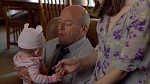
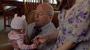
 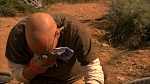
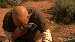
«Dead Freight», 5th episode of the 5th season, which you can watch online for free in good quality BDRip and professional voice acting "Cube in the Cube", was released on August 12, 2012 on the AMC channel and collected 2.48 million viewers from the screens. The episode was directed by George Mastras and written by George Mastras.
What is Breaking Bad season 5 episode 5 about
The most important ingredient for the production of meth is methylamine. It's getting harder and harder to get it. Mike believes that Lydia betrayed them, but she managed to prove that this was not so. It's just that the feds have stepped up control. The heroes are going to steal a large amount of the substance directly from the train that transports it. To avoid killing the machinists, Walter comes up with an ingenious plan to drain the methylamine. The team is assisted by exterminator Todd. He without hesitation shoots the only witness - a teenager on a motorcycle.
Watch online Breaking Bad - Season 5 Episode 5 for free in good quality you can on the main page of this site.
Вreaking Bad - Season 5 Episode 6
«Buyout», 6th episode of the 5th season, which you can watch online for free in good quality BDRip and professional voice acting "Cube in the Cube", was released on August 19, 2012 on the AMC channel and collected 2.81 million viewers from the screens. The episode was directed by Colin Baxey and written by Jennifer Hutchinson.
What is Breaking Bad season 5 episode 6 about
What happened in the desert made me think about the limit. Mike is constantly being watched, so it's dangerous to keep working. He and Jesse want to get out of the business and sell their shares of methylamine. Walter takes the idea with hostility, although everyone can get 5 million at a time. The buyer is ready to buy either everything or nothing: he wants to get rid of competitors in such a move. Mike intends to force Walter to accept the offer, but he steals the tanker while the partner was under interrogation.
Watch online Breaking Bad - Season 5 Episode 6 for free in good quality you can on the main page of this site.
Вreaking Bad - Season 5 Episode 7

«Say My Name», 7th episode of the 5th season, which you can watch online for free in good quality BDRip and professional voice acting "Cube in the Cube", was released on August 26, 2012 on the AMC channel and collected 2.98 million viewers from the screens. The episode was directed by Thomas Schnause and written by Thomas Schnause.
What is Breaking Bad season 5 episode 7 about
Since Mike is no longer in business, Walter finds another man to take his place. Searches at Ehrmantraut yield nothing. White shaves the already proven Todd as assistants instead of the refused Pinkman. Hank and the DEA have progress on their investigation: they have found the lawyer who laundered money for Mike. The witness is willing to cooperate, which means it's time for his former client to run. At the last meeting with Walter, Mike refuses to give the names of his people who received "pension" and dies.
Watch online Breaking Bad - Season 5 Episode 7 for free in good quality you can on the main page of this site.
Вreaking Bad - Season 5 Episode 8

«Gliding Over All», 8th episode of the 5th season, which you can watch online for free in good quality BDRip and professional voice acting Cube in the Cube, was released on September 2, 2012 on the AMC channel and gathered 2.78 million viewers at the screens. The episode was directed by Michelle McLaren and written by Moira Walley.
What is Breaking Bad season 5 episode 8 about
Walter's business is growing into an empire, just like he wanted. All the witnesses in the Hus case have been killed, and new distribution channels have been found, including in Europe. Jesse gets his cut, even though he didn't ask for it. Skyler doesn't stop trying to stop her husband. She even clearly demonstrates to him that the family has more than enough money. White agrees with the arguments and is going to quit cooking meth. A book found in the house of relatives opens Hank's eyes: Walter is the mysterious Heisenberg.
Watch online Breaking Bad - Season 5 Episode 8 for free in good quality you can on the main page of this site.
Вreaking Bad - Season 5 Episode 9


«Blood Money», 9th episode of the 5th season, which you can watch online for free in good quality BDRip and professional voice acting "Cube in the Cube", was released on August 11, 2013 on the AMC channel and collected 5.92 million viewers from the screens. The episode was directed by Bryan Cranston and written by Peter Gould.
What is Breaking Bad season 5 episode 9 about
After checking some facts, Hank is convinced that he was right about Walter. Jesse is in a bad state: he does not want to take the money and no longer trusts the mentor. White is undergoing another course of treatment for cancer. Between him and Hank there is a frank conversation. Walter is reminded of two things. Firstly, in six months, even if the investigation continues, there will be no one to jail. Secondly, if everything Hank thinks about his brother-in-law is true, then angering such a person is not a good idea.
Watch online Breaking Bad - Season 5 Episode 9 for free in good quality you can on the main page of this site.
Вreaking Bad - Season 5 Episode 10
«Buried», 10th episode of the 5th season, which you can watch online for free in good quality BDRip and professional voice acting "Cube in the Cube", was released on August 18, 2013 on the AMC channel and collected 4.77 million viewers from the screens. The episode was directed by Michelle McLaren and written by Thomas Schnauz.
What is Breaking Bad season 5 episode 10 about
White does not have time to warn his wife, and Hank gets to her first. Although Skyler is confused, she refuses to testify and speak without a lawyer. The only direct evidence that exists against Walter is money. He buries barrels of cash in the desert. Marie goes crazy after learning the truth about her relatives and tries to take their daughter. Hank doesn't know how to do it right: his career is over, so they can still attract for complicity. Lydia kills Declan by proxy.
Watch online Breaking Bad - Season 5 Episode 10 for free in good quality you can on the main page of this site.
Вreaking Bad - Season 5 Episode 11
«Confessions», 11th episode of the 5th season, which you can watch online for free in good quality BDRip and professional voice acting "Cube in the Cube", was released on August 25, 2013 on the AMC channel and collected 4.85 million viewers from the screens. The episode was directed by Michael Slovis and written by Jennifer Hutchinson.
What is Breaking Bad season 5 episode 11 about
Detained earlier, Jesse is not going to testify against Walter. White makes an unexpected move: he writes down a confession, but in them he calls the founder of the drug empire Hank, exposing himself as a forced laborer. There is also a mention of the money spent on the rehabilitation of the brother-in-law. Jesse, on the advice of Walter, is about to leave, but a combination of circumstances makes it clear that the former partner is behind Brock's poisoning. He flies off the coils and thinks only of revenge.
Watch online Breaking Bad - Season 5 Episode 11 for free in good quality you can on the main page of this site.
Вreaking Bad - Season 5 Episode 12
 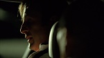
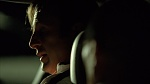

«Rabid Dog», 12th episode of the 5th season, which you can watch online for free in good quality BDRip and professional voice acting "Cube in the Cube", was released on September 1, 2013 on the AMC channel and gathered 4.41 million viewers at the screens. The episode was directed by Sam Catlin and written by Sam Catlin.
What is Breaking Bad season 5 episode 12 about
After beating Saul, Jesse heads to Walter. He douses his house with gasoline and wants to set it on fire, but Hank appears. Now Pinkman is not averse to cooperating, just to annoy the ex-mentor. But the DEA doesn't just want a recorded confession. They need to send Jesse to Walter for a meeting with the wiretap. The guy gives back at the last moment, as he has a new plan. Skyler asks her husband to solve the problem with the assistant once and for all. White brings Todd into the case.
Watch online Breaking Bad - Season 5 Episode 12 for free in good quality you can on the main page of this site.
Вreaking Bad - Season 5 Episode 13
«To'hajilee», 13th episode of the 5th season, which you can watch online for free in good quality BDRip and professional voice acting "Cube in the Cube", was released on September 8, 2013 on the AMC channel and collected 5.11 million viewers from the screens. The episode was directed by Michelle McLaren and written by George Mastras.
What is Breaking Bad season 5 episode 13 about
Todd's uncle, Jack, is pleased that the quality of his nephew's meth has improved significantly. It’s just that he doesn’t succeed in the blue color, and this, whatever one may say, is already a brand. The gang agrees to help kill Jesse if White teaches Todd his formula. Hank, his partner and Pinkman lure Walter out into the desert to the place where the money is buried. Jack also drives up there with the fighters, when the chemist was already in handcuffs. A shootout begins, where the law enforcement officers are clearly outnumbered.
Watch online Breaking Bad - Season 5 Episode 13 for free in good quality you can on the main page of this site.
Вreaking Bad - Season 5 Episode 14

«Ozymandias», 14th episode of the 5th season, which you can watch online for free in good quality BDRip and professional voice acting "Cube in the Cube", was released on September 15, 2013 on the AMC channel and collected 6.37 million viewers from the screens. The episode was directed by Rian Johnson and written by Moira Whalley.
What is Breaking Bad season 5 episode 14 about
Hank and his partner are killed. Money also goes to bandits. Before Jack took Jesse, Walter told him the truth about Jane's death. White was left with one barrel of cash. There are about 10 million. He gets home and wants to take his family out of the city. But they don't want to go. Walt Jr. is now aware of his father's "work". He calls the police because of the fight between his parents. Escaping, the chemist kidnaps his own daughter, but later comes to his senses and leaves her at the fire station.
Watch online Breaking Bad - Season 5 Episode 14 for free in good quality you can on the main page of this site.
Вreaking Bad - Season 5 Episode 15


«Granite State», 15th episode of the 5th season, which you can watch online for free in good quality BDRip and professional voice acting "Cube in the Cube", was released on September 22, 2013 on the AMC channel and collected 6.58 million viewers from the screens. The episode was directed by Peter Gould and written by Peter Gould.
What is Breaking Bad season 5 episode 15 about
Todd wants to grow the business. He climbs into Skyper's house with his henchmen and makes it clear: she will not be harmed if Lydia's name is not mentioned during interrogations. Later, Todd kills Jesse's ex-lover in front of him. So they want to punish Pinkman for trying to escape, and at the same time make him cook meth. For some time, Walter lives in the wilderness. A program seen on TV, where former colleagues say that he did not make any contribution to their common company, makes him break away.
Watch online Breaking Bad - Season 5 Episode 15 for free in good quality you can on the main page of this site.
Вreaking Bad - Season 5 Episode 16


«Felina», 16th episode of the 5th season, which you can watch online for free in good quality BDRip and professional voice acting "Cube in the Cube", was released on September 29, 2013 on the AMC channel and collected 10.28 million viewers from the screens. The episode was directed by Vince Gilligan and written by Vince Gilligan.
What is Breaking Bad season 5 episode 16 about
Walter takes his millions to former friends with whom he once organized a company. He asks them to give the money to his son when he becomes an adult. If the couple does not do this, then the killers will allegedly kill them. Then Walter visits his wife and daughter, poisons Lydia, makes automatic weapons and rushes to free Jesse. His invention shoots Jack and company, and Pinkman himself strangles the surviving Todd with his chain. Bleeding, White enters the lab for the last time.
Watch online Breaking Bad - Season 5 Episode 16 for free in good quality you can on the main page of this site.